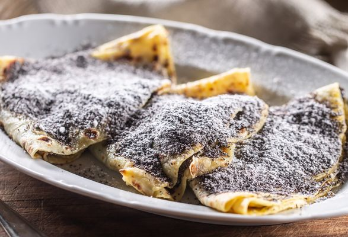

Sweet Potato pancakes - Lokše

Lokše, best described as potato pancakes,
are a universal main/side dish in Slovakia, that can be made sweet or savoury.
Time: 35 minutes
Equipment:
Ingredients:
- 1kg of potatoes
- 350g of smooth wheat flour
- jam (plum, strawberry, ..)
- ground poppy
- powdered sugar
- melted butter
- salt
Steps:
- Cook the potatoes in a pot with their skin and let them cool down.
- Scrape the skin off of the potatoes and shred them.
- Add the potatoes, flour and a bit of salt together in a bowl.
- Make dough from the mixture which we'll divide into 10 to 12 pieces.
- Using the roller, we'll roll the dough into the shape of a pancake.
- We cook these pancakes on a dry pan until golden-brown on both sides.
Serving: We serve the pancakes folded into quarters and with jam, poppy and sugar on top.
back to main page